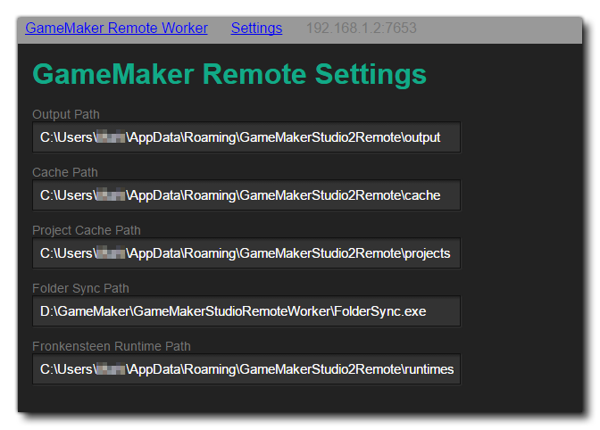

Lorsque vous compilez votre jeu, vous utilisez généralement l’agent de travail "Local", qui est l’ordinateur sur lequel GameMaker Studio 2 a été installé. Toutefois, dans certaines circonstances, vous devrez peut-être utiliser un autre ordinateur pour générer vos projets. Par exemple, si vous travaillez sur un Mac et que vous voulez construire un projet Windows, vous voudrez peut-être configurer un travailleur distant et faire en sorte que Windows PC le construise. Lorsque vous utilisez un travailleur distant, GameMaker Studio 2 envoie tous les fichiers requis de la machine (locale) sur laquelle il est exécuté à la machine de travail distante, puis utilise cette machine pour créer le fichier exécutable final du projet. sur la machine distante, ou le retourner ensuite à la machine locale). Cependant, avant de pouvoir utiliser cette fonctionnalité, vous devrez avoir installé certains outils sur la machine de compilation et effectué certaines opérations de configuration, ce que nous expliquerons ici.
Pour configurer un travailleur distant, vous devez d'abord installer l'application de génération d'outils de travail à distance sur le PC à utiliser. Vous pouvez trouver cet outil en allant dans le menu Construire de GameMaker Studio 2 sur la machine locale et en sélectionnant l'option "Afficher le programme d'installation du travailleur distant":
Vous pouvez également cliquer sur l'icône "œil" dans le gestionnaire de cibles et obtenir le programme d'installation de Remote Worker de la manière suivante:
L'installateur s'appellera quelque chose comme " GameMakerStudio-Remote-Installer-X.X.X.XXX.exe "et vous devez le copier sur le PC que vous souhaitez utiliser en tant que travailleur distant (vous n'avez pas besoin d' GameMaker Studio 2 sur le travailleur distant, mais uniquement ce programme). Une fois que vous l'avez copié sur le PC de construction, installez-le en suivant les instructions à l’écran et, une fois le programme d’installation terminé, le système d’exploitation vous demandera d’accéder à votre réseau via le pare-feu. Une fois que vous aurez accordé cet accès, le programme d’installation ouvrira une page dans votre navigateur Web. Vous devez noter l’adresse IP et le numéro de port indiqués sur cette page, car vous en aurez besoin pour l’étape suivante.
Vous devez maintenant revenir à la machine sur laquelle GameMaker Studio 2 installé et cliquer sur le bouton Gestionnaire de cibles. pour ouvrir la fenêtre du gestionnaire de cibles, accédez à la section Worker et cliquez sur le bouton Add Worker
. Cela ouvrira alors la fenêtre suivante:
Ici, vous devez attribuer un nom à votre travailleur distant (c’est ce qui sera affiché dans la liste des travailleurs du gestionnaire cible), puis dans la section Nom de l’ hôte, ajoutez l’adresse qui vous a été affichée et notée précédemment à partir de la machine de travail, y compris: le numéro de port.
Si tout s'est correctement déroulé, vous devriez maintenant recevoir un message indiquant que vous pouvez vous connecter avec succès à l'ordinateur de travail distant. Une fois que votre travailleur à distance est installé et connecté à votre ordinateur IDE principal, vous devez configurer les paramètres de construction locaux pour chaque plate-forme (voir la section ci-dessous pour plus de détails) avant de pouvoir compiler votre projet.
La page des paramètres affiche les différents chemins d'accès et les paramètres de construction de l'application Remote Worker. En haut des paramètres, vous avez les différents chemins qui seront utilisés par l'application Travailleur à distance. Avant toute chose, ceux-ci doivent être révisés et définis sur des chemins alternatifs si nécessaire (en général, les chemins par défaut devraient être corrects). Vous pouvez accéder à la page des paramètres du travailleur à distance à l'aide de l'une des méthodes suivantes:
- Cliquez sur le lien "Paramètres" en haut de la page Travailleur à distance qui s'ouvre dans le navigateur de votre ordinateur distant:
- Utilisez le RMB sur l’icône de la barre de travail du travailleur distant pour ouvrir les paramètres dans le navigateur de votre ordinateur distant:
- Sur votre ordinateur local, ouvrez le gestionnaire de cibles et cliquez sur l'icône "cog"
top ouvrez les paramètres de travail dans une fenêtre de votre ordinateur local:
Cela affichera la page des paramètres où vous pouvez voir (et définir) les différentes options qui vous permettent de définir les chemins pour la construction de votre projet: 
Après avoir vérifié les chemins d'accès à utiliser par l'application de travailleur à distance, vous pouvez définir (si nécessaire) les différents paramètres de construction locaux. Différentes plates-formes nécessiteront l'installation de différents outils de compilation sur le PC de compilation et le travailleur à distance devra pouvoir les utiliser pour créer vos jeux via la page Paramètres. Les premiers paramètres ici sont les paramètres généraux:
Ici, vous pouvez configurer le port du serveur d’aide et le port du débogueur à utiliser. Ceux-ci peuvent être modifiés si vous rencontrez des problèmes de connexion lors de l'utilisation du module de débogage, mais doivent en général être laissés à leurs valeurs par défaut.
Vous pouvez maintenant aller de l'avant et configurer les différentes options pour les plates-formes pour lesquelles le travailleur distant peut créer:
- Windows
Si vous avez accès à la plate-forme cible Windows, vous devriez pouvoir créer en utilisant immédiatement le travailleur distant sur le Windows PC à l'aide de l'option VM. Toutefois, si vous souhaitez utiliser le code YYC, vous devez également définir le chemin d'accès à Visual Studio sur le PC de génération. Pour plus de détails sur la configuration d'un Windows PC pour compiler vos projets, veuillez consulter l'article suivant du support technique:
Une fois que votre travailleur à distance a été configuré et que vous avez défini les paramètres de construction locale (voir la section ci-dessus), vous pouvez commencer à l’utiliser pour compiler vos jeux. Pour cela, il suffit simplement de sélectionner le travailleur distant dans la liste du gestionnaire cible, de sélectionner la plate-forme pour laquelle effectuer un test / une compilation, ainsi que toute autre option (type de compilation ou de configuration), puis d'appuyer sur Play.
ou créer un exécutable
.
REMARQUE: Les plates-formes disponibles dans le gestionnaire de cibles changeront en fonction des capacités de l'ordinateur du travailleur distant. Toutes les cibles ne seront pas disponibles. Notez également qu'il n'y a pas de cible "Test" pour les télétravailleurs.
Si vous ne faites que lire le projet, la machine du travailleur à distance le compilera et l'exécutera, mais si vous créez un fichier exécutable, alors le travailleur à distance compilera le projet, puis retournera un *.zip fichier sur la machine locale pour la sauvegarde.Il convient de noter que ni le bouton Debug
ni le bouton Clean
sera disponible lors de l'utilisation d'un travailleur à distance. Notez également que vous ne pouvez actuellement effectuer qu'une seule version distante à la fois.


Une fois que vous avez installé et exécuté Remote Worker sur votre ordinateur distant, il apparaît dans la barre des tâches sous forme d'icône. Vous pouvez également cliquer dessus avec le bouton droit de la souris pour afficher les options suivantes: 
- Ouvrir: Ouvrez l'application Travailleur à distance dans votre navigateur par défaut.
- Afficher le journal: ouvrez le fichier journal du travailleur distant dans votre navigateur.
- Paramètres réseau: vous pouvez filtrer les machines pour lesquelles vous souhaitez envoyer des versions à la machine de travail à distance. Chaque filtre peut être un filtre de style CIDR ou un nom d'hôte d'une machine à autoriser. Vous devez savoir que si vous souhaitez que plusieurs machines se connectent à un travailleur distant, ou si vous mélangez des types de connexion (par exemple, câblé et wifi), vous devrez peut-être modifier la plage IP autorisée ici.
- Modifier les paramètres: Ouvrez le menu des paramètres du travailleur distant (expliqué dans la section Paramètres ci-dessus).
- Quitter: quitte l'application Remote Worker. Cela signifie que vous ne pourrez plus vous connecter (ni compiler) avec l'application à partir d'un ordinateur local tant que vous n'aurez pas redémarré l'application Remote Worker.